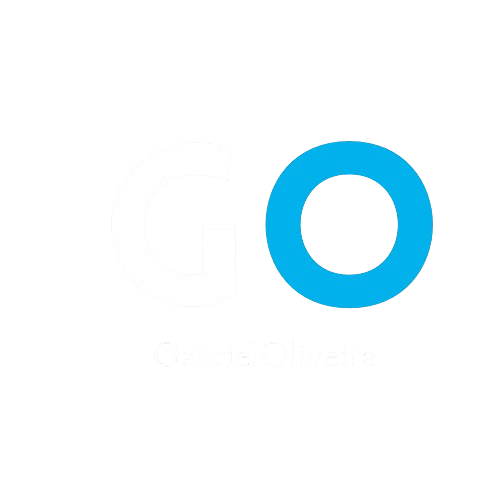
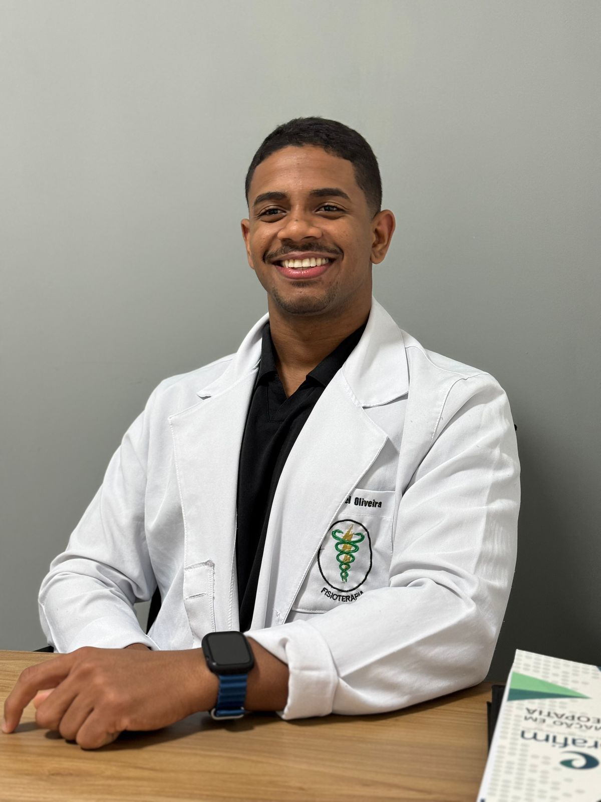

Dr. Gabriel Oliveira.
Fisioterapeuta especialista em fisioterapia esportiva e exercicio fisico.
Crefito: 314633-F


Gabriel Oliveira | Fisioterapia Esportiva
Dr. Gabriel Oliveira, fisioterapeuta especialista em fisioterapia esportiva e exercicio fisico.
Fisioterapeuta especialista em fisioterapia esportiva e exercicio fisico.
Crefito: 314633-F

Atendimento direto com o Dr. Gabriel Oliveira para prevencao, recuperacao e retorno seguro ao treino.
Falar com Gabriel